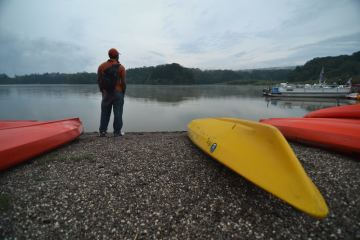
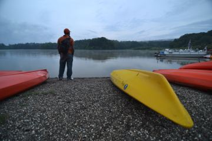
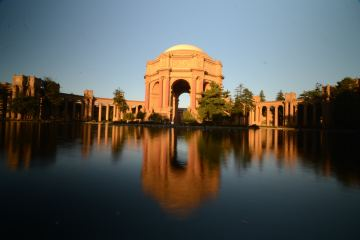
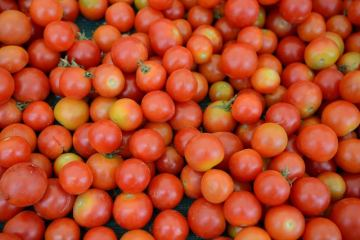

Get started
The Atelier window
One window with three views: Grid to browse, Loupe to look closely, Develop to edit. HDR, an occasional tool, opens in the same window from the Photo menu. The parts around the photos stay in the same places in every view.
Library
All Photographs1,284
Imports
Summer 201142
Paris 2024310
Kathakali18
Locations
Macintosh HD
megham offline
Collections
Website
Prints 2026
Search filename, title, caption, keywordFilters ⌄



42 photos · 1 selectedImported 42 photos
Photo
FileDSC_0004.NEF
CameraNIKON D3100
Lens11 mm ƒ/2.8
Rating and labels
Rating★★★★
FlagPicked
Keywords
lake, dawn, kayaks
Summer 2011 · 42 photos · 1 selected · 1 of 42 · DSC_0004.NEF
⌄
- Import and Export. See Import photos and Export.
- Grid, Loupe, Develop: switch views (G E D). Organize adds the selection to collections and imports.
- Show or hide the Inspector.
- Sidebar: all photos, your imports, drives and folders, collections. In Develop it becomes presets, snapshots and history; in HDR, the source and its saved result.
- Filter bar: search and filter by rating, flag and label.
- Grid, with badges under each photo. See Grid badges.
- Status bar: counts, and progress with Cancel for imports, exports and other background work.
- Inspector: the photo's details, rating, keywords. In Develop and HDR it becomes the editing panels. Drag its left edge to resize.
- Filmstrip: the current list, in every view. F6 hides it.
The three views
- Grid G
- Browse, select, rate and organize. See Organize and find.
- Loupe E
- One photo, large. Double-click to zoom to 100%; arrow keys move through photos.
- Develop D
- Edit the photo. See Develop basics.
Photo › HDR… (⌃H, or right-click a photo › Edit in HDR) shows one photo's original in HDR, in this same window with the Filmstrip and panels. Done or Esc goes back to the view you opened it from; Grid, Loupe or Develop (G, E, D) also leave it. See Single-image HDR.
Right-click everything
Photos (in the grid, loupe, Develop, HDR and the Filmstrip), sidebar entries, panel headers, masks, presets and color wheels all have right-click menus with the commands that apply to them. Every command is also in a menu in the menu bar.
Themes
Atelier › Settings… › Appearance picks the look: System, Light, Dark, Graphite (like Lightroom), Darkroom (near black) or Neutral Gray (for judging color).
Atelier remembers where you were
When you open Atelier, it comes back to the view, sidebar item, filters, selection and zoom you left, with the same photo open in Develop. If that photo is gone or its drive is off, you'll see the grid with a note in the status bar.
If the catalog cannot open
⚠ Couldn’t Open Catalog
~/Pictures/Atelier/Atelier Catalog.atelier
The reason appears here.
Show in FinderQuitTry Again ↵
If Atelier cannot open its catalog, this screen replaces the splash. It names the location and reason. Try Again retries the same location after you resolve the problem, such as unavailable storage or access permissions. Show in Finder reveals the catalog, or its nearest available parent folder. Quit closes Atelier without making a catalog backup for the failed launch.
Atelier does not delete, replace or reset the catalog, or automatically restore a backup. A catalog folder missing its database but containing previews, backups or other files is reported as a problem instead of opening an empty library. An empty folder, or one containing only Finder’s .DS_Store file, can finish a first launch that was interrupted. Use Show in Finder to locate the catalog’s Backups folder, where saved database copies are kept. Preserve a copy of the entire catalog package, including any database companion files, before attempting recovery. There is no built-in restore command yet. Library commands and settings become available once the catalog opens. Help › Atelier Help remains available while you resolve the problem.
Next: Import photos · Keyboard shortcuts